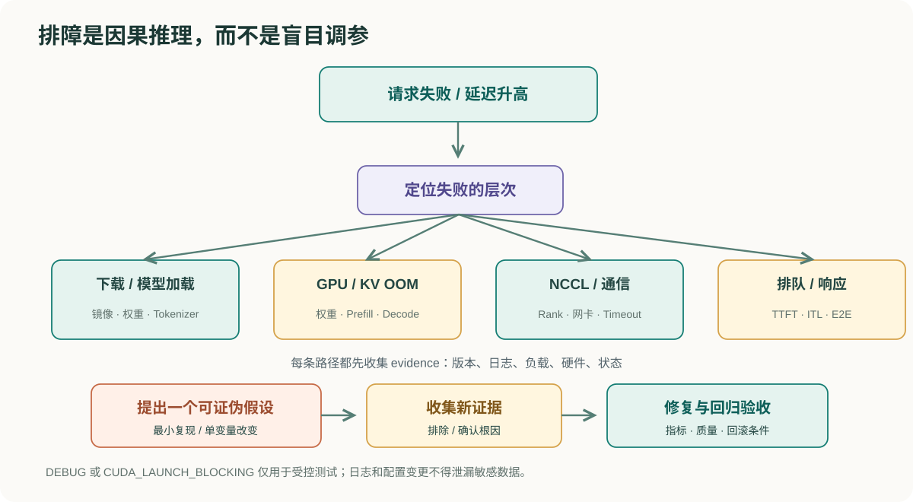

第 24 章 · 从原理到可复现实验
Troubleshooting：按证据排查推理故障
把 OOM、NCCL、模型加载、CUDA Graph、编译与性能退化串成一套可复现的排查路径。
推理服务故障常在不同层级表现为类似的超时或崩溃。有效排障不是“尝试很多参数”，而是从日志、请求分布、GPU 状态和版本证据中提出可证伪的假设，并用最小实验排除错误方向。
学习目标
- 根据现象判断故障处于哪一层。
- 区别启动 OOM 与高负载运行 OOM。
- 定位 NCCL 和 CUDAGraph 的受控调试方法。
- 产出含环境、负载、假设与验收结果的记录。

24.1 症状 → 证据 → 可证伪假设
排障不要先随手修改 gpu_memory_utilization、增加 TP 或降低 batch。第一步确定失败发生的层次：模型下载 / 权重加载、启动与 compile、分布式初始化、请求调度、GPU 运行时、网关与客户端。
| 现象 | 先收集什么 | 下一步实验 |
|---|---|---|
| 启动 OOM | GPU 余量、权重大小、加载阶段日志 | 单卡小模型验证环境，再分辨权重和 KV 预算 |
| 运行 OOM | 请求长度 / 并发、KV Cache usage、抢占 | 控制并发与最大上下文长度，仅改一个参数 |
| NCCL 超时 | world_size、rank、网卡地址和各进程最后日志 | 单卡基线、网络连通性、正确网卡选择 |
| TTFT 变慢 | 请求排队、Prompt tokens、Prefill 与缓存命中 | 固定输出长度，将请求率和输入分布分开控制 |
| Decode 抖动 | ITL / TPOT、KV 使用、GPU collectives | 比较 TP、采样、队列与 GPU 利用率 |
| 输出品质异常 | 模型 revision、Tokenizer、Chat Template、generation_config | 对齐 sampling seed / stop 和模板 |
记录最小复现所需元数据：git SHA / image digest / model revision / tokenizer / GPU / driver / CUDA / torch / vLLM args，并保存失败请求的脱敏统计特征，避免把真实 Prompt 和密钥写进 issue。
24.2 OOM：不是所有显存问题都来自 KV Cache
近似把显存占用拆成 Weights + KV Cache + runtime/activations + graph/workspaces + fragmentation。启动时即失败和数小时后随请求增长失败，排查路径不同。不要把 gpu_memory_utilization=0.9 理解成“模型权重只占 90%”。它主要用于给模型执行与 KV 管理划定实例可用显存预算，真实内存分配依版本和实现。
- 确认
nvidia-smi中其他进程占用，记录显卡型号/容量和 vLLM 版本。 - 辨别模型权重加载、profile、KV 分配、CUDA Graph capture 或请求运行阶段；分析对应日志。
- 先缩小
--max-model-len、输入长度、请求并发，或考虑适用的 TP / PP / 量化；每次只改变一个变量。 - 如仍失败，可与官方 节约显存指南逐项核对 KV Cache dtype、CPU offload 和 graph 捕获等选项，并量化吞吐与延迟代价。
# 观察工具：只读、无需改动线上配置
nvidia-smi
python -c "import torch; print(torch.__version__, torch.cuda.is_available())"
# 在已授权的测试环境中打开更详细日志
VLLM_LOGGING_LEVEL=DEBUG vllm serve <tested-model> --max-model-len 2048若小模型能稳定加载而目标模型不能，优先检查模型与权重/缓存需求。若极小并发即可运行，压力增加时失败，重点观察 KV 容量、输入 token 分布和重复请求，避免以单纯扩大 max-num-seqs 应对。
24.3 NCCL / 多进程卡住：先确认所有 rank 在哪里
TP、PP、DP/EP 的 collective 需要参与 rank 的通信次序与通信域一致。某个 rank 提前 OOM、异常退出，其他 rank 也可能卡在 collective，表面看起来像 NCCL bug。
# 仅在受控测试环境临时启用（会增加日志量）
export NCCL_DEBUG=INFO
export VLLM_LOGGING_LEVEL=DEBUG
# 网络环境复杂时，核对实际网卡后再指定：
# export NCCL_SOCKET_IFNAME=eth0
# export GLOO_SOCKET_IFNAME=eth0
# export VLLM_HOST_IP=10.x.x.x
按 单 GPU → 同节点 TP=2 → 同节点 TP=4 → 跨节点构造递增复现；记录 rank、拓扑、网卡、driver、NCCL/PyTorch 版本。官方文档对不正确 IP 和网卡选择提供了明确排查步骤。不要在没有排查证据的情况下长期设置特殊 NCCL 环境变量，也不要为解决通信问题开放不必要的公网端口。
24.4 CUDA Graph、Triton、torch.compile 错误如何隔离
如果堆栈停在 self.graph.replay()，出错的 kernel 可能在此前的异步操作中发生。诊断时可以临时使用 --enforce-eager 禁用图捕获，再结合 CUDA_LAUNCH_BLOCKING=1 将错误定位到更接近实际的位置；这会影响速度，不应该作为常态优化。
若错误来自 torch.compile / Triton / PTX，先核对 GPU compute capability、CUDA 驱动、PyTorch、Triton 和 vLLM wheel 的兼容关系。硬件不支持的量化 kernel 不应通过盲目升级一个包来修复；记录矩阵并使用官方兼容版本。
诊断模式会改变运行行为。例如 VLLM_TRACE_FUNCTION=1 可能产生极高的开销。切勿将其直接用于繁忙生产节点；对敏感日志和堆栈输出执行脱敏。
24.5 同时跑性能与质量的回归定位
模型加载成功并不意味着端到端正确。典型回归包括：使用模型作者提供的 generation_config.json 与此前中性 sampling 默认值不同；Chat Template 或 Tokenizer revision 变更；模型量化 kernel 回退；Prefix Cache 命中率改变；客户端重试放大负载。
采用 A/B 矩阵，每次固定数据集、模型 revision、最大长度、随机种子、GPU 和软件版本，只调整一个配置。必要时比较 --generation-config vllm，注意这会改变 sampling 行为，不能用来“证明模型没有问题”。
在第 17 章的 Prometheus 指标中，将 queue time、TTFT、ITL、E2E 与 KV Cache 指标关联；第 25 章将给出如何量化回归而不误读 benchmark 的方法。
24.6 复现与复盘记录模板
| 记录项 | 必须包含 |
|---|---|
| 故障影响 | 发生时间、受影响请求数、错误类别、是否回滚 |
| 版本 | 镜像 digest、commit、模型与 tokenizer revision |
| 环境 | GPU / CPU / 内存 / 网络 / driver / CUDA / torch |
| 负载 | 并发、Token 分布、请求到达率、缓存状态 |
| 实验 | 假设、唯一修改变量、结果和重复次数 |
| 修复验收 | 静态测试、真实请求、P95/P99、回滚条件 |
完整排障报告应留下“证据与反例”，而不只是最终配置；它可以作为以后对照版本升级的依据。
学习自测
- 单次 CUDA OOM 与高并发 KV Cache 不足应收集哪些不同证据？
- 什么条件下可以通过 --enforce-eager 定位 CUDAGraph 问题？
- 如何证明 NCCL 卡住是网络而非某个 rank 已经崩溃？
- 为什么禁用安全防护或无限加大 GPU 配额不是正确的第一步？
权威资料与证据入口
- vLLM Troubleshooting：官方 OOM、NCCL、CUDAGraph、Torch Compile、模型配置和日志排查
- Conserving Memory：权重与 KV 预算的配置权衡
- Production Metrics：排队/缓存/延迟客观信号
- Architecture Overview：定位 API Server、Engine Core 与 GPU Worker
- vLLM cache config：版本相关显存与 KV 参数
本文按 vLLM 上游提交 e72fc9ae50c221180c4b8f4a94c5009714a4b199 核对，文档审校日期 2026-11-22。命令用于诊断或实验，不替代现网变更审查。